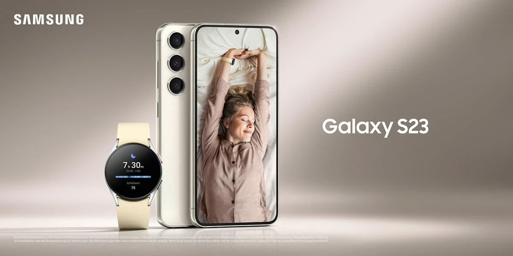
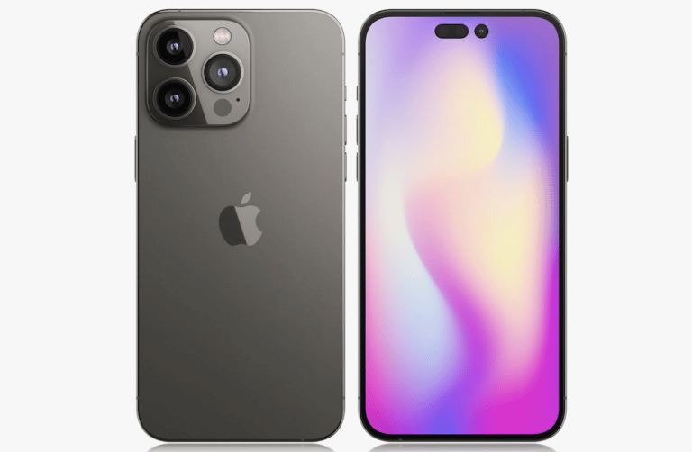
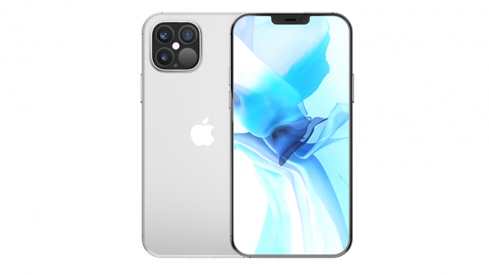
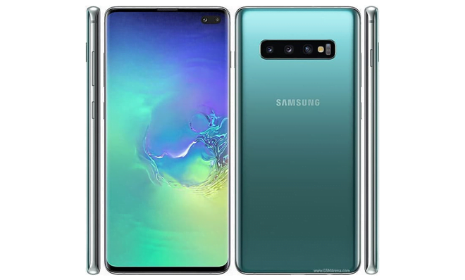

Testando Flexbox
2023
Galaxy S23 Ultra
Ele se diferencia dos demais por contar com uma caneta inteligente acoplada no celular — como a antiga linha Galaxy Note. O aparelho tem tela Dynamic AMOLED 2X, com 120 Hz de frequência — essencial para evitar engasgos em sessões de jogos de ação —, e ainda possui proteção IP68, a mais alta contra entrada de poeira e água.
2022
iPhone 14 Pro Max
Foi no iPhone 14 Pro e Pro Max que finalmente os usuários da Apple passaram a contar com tela com taxa de atualização de 120 hz e o Dynamic Island, recurso de notificação na tela ao redor do notch que abriga a câmera frontal.
2021
Galaxy S21 Ultra
No ano de 2021 a Samsung terminou o Galaxy S21 Ultra que além de contar com o visual mais reto que é característico do Galaxy Note, também foi o primeiro a contar com suporte a caneta S-pen, contando com todas as funcionalidades presentes nos aparelhos Galaxy Note.
2020
iPhone 12 Pro Max
Ainda na alternância entre Apple e Samsung entre o melhor aparelho de cada ano no mercado brasileiro, o iPhone 12 pro Max trouxe, até aquele momento, a maior tela em um iPhone, com 6,7 polegadas, OLED, mas ainda com 60 Hz.
2019
Galaxy S10 Plus
Em 2019 a Samsung ainda não havia criado os aparelhos Ultra para a linha Galaxy S, cabendo ao S10 Plus a alcunha de melhor celular Samsung do ano.
2018
Galaxy Note 9
Poucos aparelhos foram tão unanimidades em seus anos de lançamento quanto o Galaxy Note 9 que trouxe uma ficha técnica bastante completa, indo da tela de alta qualidade com painel Super Amoled e resolução Full HD+, passando pela construção premium feito em vidro com alumínio nas laterais e certificação IP68.